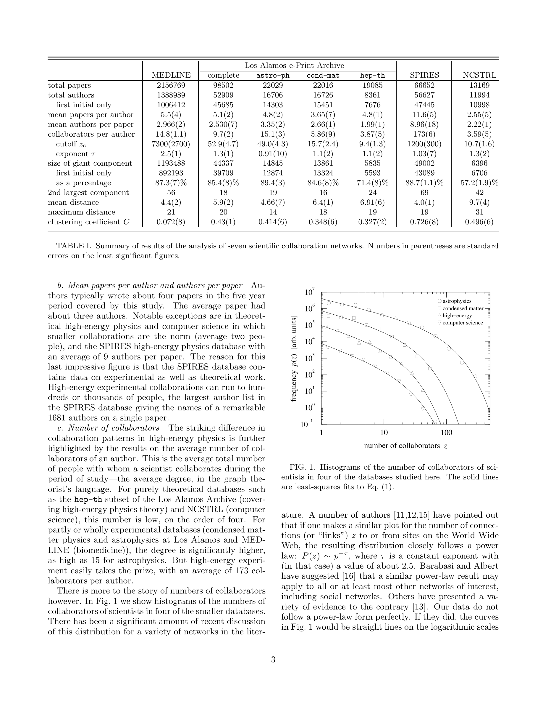

저자: M. E. J. Newman | 날짜: 2001 | Journal: Proceedings of the National Academy of Sciences | DOI: 10.1073/pnas.98.2.404 | arXiv: - 리뷰 모드: PDF
과학자들의 공동 저작 네트워크는 어떤 구조를 가지고 있는가? 이 논문은 MEDLINE(생의학), Los Alamos e-Print Archive(물리학), NCSTRL(컴퓨터 과학) 등 세 개 대형 데이터베이스를 분석하여 과학 협력 네트워크가 "작은 세계(small-world)" 구조를 형성하며, 임의로 선택된 두 과학자 사이의 평균 경로가 매우 짧다는 것을 실증했다. 동시에 분야별 협력 패턴의 차이(물리학의 대규모 그룹 vs. 생의학·컴퓨터과학의 소규모 팀)도 정량화했다.

Figure 1: 과학 협력 네트워크의 구조 분석 — 협력자 수 분포와 네트워크 특성과학 협력 네트워크의 구조를 이해하는 것은 지식 확산, 연구비 배분, 연구 그룹 형성 정책의 근거가 된다. 소세계 구조는 아이디어와 정보가 과학 공동체 전반에 빠르게 전파될 수 있음을 의미한다.
| 항목 | 점수 |
|---|---|
| Novelty | 5/5 |
| Technical Soundness | 5/5 |
| Significance | 5/5 |
| Clarity | 5/5 |
| Overall | 5/5 |
총평: 과학 협력 네트워크 연구의 출발점이 된 고전적 논문으로, 소세계 구조와 분야별 차이를 최초로 엄밀하게 정량화한 기념비적 기여이다.